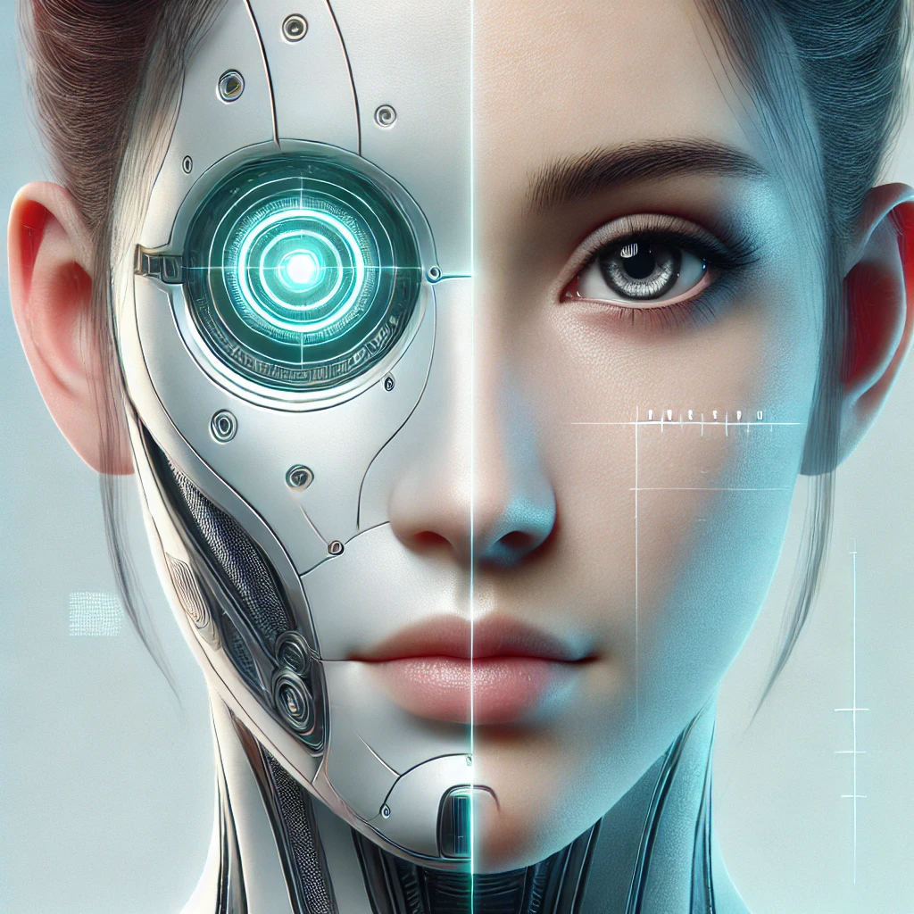

Jeff A.
A Life-Changing Upgrade - I Feel Unstoppable!
"A Life-Changing Upgrade - I Feel Unstoppable!" I can't express how thrilled I am with my new robotic enhancements! After years of struggling with physical limitations, I decided to invest in the cybernetic arm and leg upgrades, and I can confidently say it was the best decision of my life. The arm is nothing short of a miracle - the precision, strength, and flexibility it offers are leagues beyond anything I ever imagined. Tasks that used to feel tedious or impossible now feel effortless. From lifting heavy objects to performing delicate work, this arm is a marvel of engineering. The leg upgrade is equally transformative. I've regained mobility I thought was long gone, and the added boost of power and endurance has made activities like hiking and running feel better than they ever did with my natural legs. I feel like I've been given a second chance at experiencing the world. What surprised me the most was how seamlessly the robotic parts integrated with my body. The neural interface is incredibly intuitive - it feels as though the arm and leg are simply extensions of myself. I even forget that they're not "natural" most of the time! Not only have these upgrades improved my physical abilities, but they've also given me a newfound confidence. I've never felt this strong, capable, and independent. Whether it's conquering new challenges or simply enjoying everyday life, I feel unstoppable. If you're on the fence about these robotic enhancements, take it from me - they're worth every penny. These aren't just body parts; they're a lifestyle upgrade. I'm living proof that technology can make us better than ever before!
Suzie Q.
Better Than I Ever Imagined Truly - Revolutionary!
"Better Than I Ever Imagined - Truly Revolutionary!" I was skeptical at first, but after getting the new robotic arm and eye implants, I can honestly say my life has been transformed. These enhancements have not just restored what I lost; they've taken me to a whole new level I didn't know was possible. The arm is incredible - it feels so natural, yet it's capable of feats I never dreamed of. The strength, precision, and responsiveness are beyond what any human limb could do. I've started weightlifting again, and let me tell you, my gym buddies can't believe what I'm capable of now. It's not just practical; it's empowering. The eye implant is like having superhuman vision. I can see in low light, zoom in on distant objects, and even overlay useful data in real-time. It's like living in the future! Whether I'm working, exploring, or just reading a book, it's made everything sharper and easier. What really blew me away was how quickly I adapted. The technology integrates seamlessly with my nervous system, so everything feels intuitive. It's not like using a gadget - it's like these parts have always been a part of me. I also love how durable and sleek the designs are. They're stylish, lightweight, and incredibly reliable. I've received so many compliments, and people constantly ask me about them. If you're considering robotic enhancements, don't hesitate. These upgrades have not only improved my physical capabilities but also my confidence and quality of life. I truly feel like a better version of myself.